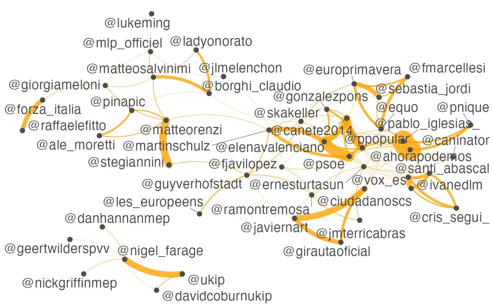

vignettes/pkgdown/examples/twitter.Rmd
twitter.RmdUsing quanteda’s fcm() and textplot_network(), you can perform visual analysis of social media posts in terms of co-occurrences of hashtags or usernames in a few steps. The dataset for this example contains only 10,000 Twitter posts, but you can easily analyse more than one million posts on your laptop computer.
load("data/data_corpus_tweets.rda")
## Document-feature matrix of: 6 documents, 42,398 features (100.0% sparse) and 34 docvars.
## features
## docs oggi pomeriggio a partire dalle 18.00 interverrò #pomeriggio5 su
## tweet1 1 1 2 1 1 1 1 1 1
## tweet2 0 0 1 0 0 0 0 0 0
## tweet3 0 0 0 0 0 0 0 0 0
## tweet4 0 0 0 0 0 0 0 0 0
## tweet5 0 0 0 0 0 0 0 0 0
## tweet6 0 0 0 0 0 0 0 0 0
## features
## docs #canale5
## tweet1 1
## tweet2 0
## tweet3 0
## tweet4 0
## tweet5 0
## tweet6 0
## [ reached max_nfeat ... 42,388 more features ]user_dfm <- dfm_select(tweet_dfm, pattern = "@*") topuser <- names(topfeatures(user_dfm, 50)) head(topuser)
## [1] "@pablo_iglesias_" "@elenavalenciano" "@canete2014_" "@nigel_farage"
## [5] "@martinschulz" "@giorgiameloni"## Feature co-occurrence matrix of: 6 by 6 features.
## features
## features @pacomarhuenda @pablo_iglesias_ @kopriths @gapatzhs
## @pacomarhuenda 0 1 0 0
## @pablo_iglesias_ 0 0 0 0
## @kopriths 0 0 0 1
## @gapatzhs 0 0 0 0
## @mariaspyraki 0 0 0 0
## @ernesturtasun 0 0 0 0
## features
## features @mariaspyraki @ernesturtasun
## @pacomarhuenda 0 0
## @pablo_iglesias_ 0 1
## @kopriths 1 0
## @gapatzhs 1 0
## @mariaspyraki 0 0
## @ernesturtasun 0 0user_fcm <- fcm_select(user_fcm, pattern = topuser) textplot_network(user_fcm, min_freq = 0.1, edge_color = "orange", edge_alpha = 0.8, edge_size = 5)
